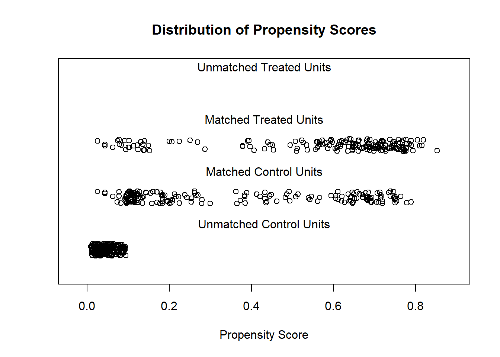

24.1 MatchIt
Procedure typically involves (proposed by Noah Freifer using MatchIt)
- planning
- matching
- checking (balance)
- estimating the treatment effect
library(MatchIt)## Warning: package 'MatchIt' was built under R version 4.0.5data("lalonde")examine treat on re78
- Planning
select type of effect to be estimated (e.g., mediation effect, conditional effect, marginal effect)
select the target population
select variables to match/balance (Austin 2011) (VanderWeele 2019)
- Check Initial Imbalance
# No matching; constructing a pre-match matchit object
m.out0 <- matchit(
treat ~ age + educ + race + married +
nodegree + re74 + re75,
data = lalonde,
method = NULL, # assess balance before matching
distance = "glm" # logistic regression
)
# Checking balance prior to matching
summary(m.out0)##
## Call:
## matchit(formula = treat ~ age + educ + race + married + nodegree +
## re74 + re75, data = lalonde, method = NULL, distance = "glm")
##
## Summary of Balance for All Data:
## Means Treated Means Control Std. Mean Diff. Var. Ratio eCDF Mean
## distance 0.5774 0.1822 1.7941 0.9211 0.3774
## age 25.8162 28.0303 -0.3094 0.4400 0.0813
## educ 10.3459 10.2354 0.0550 0.4959 0.0347
## raceblack 0.8432 0.2028 1.7615 . 0.6404
## racehispan 0.0595 0.1422 -0.3498 . 0.0827
## racewhite 0.0973 0.6550 -1.8819 . 0.5577
## married 0.1892 0.5128 -0.8263 . 0.3236
## nodegree 0.7081 0.5967 0.2450 . 0.1114
## re74 2095.5737 5619.2365 -0.7211 0.5181 0.2248
## re75 1532.0553 2466.4844 -0.2903 0.9563 0.1342
## eCDF Max
## distance 0.6444
## age 0.1577
## educ 0.1114
## raceblack 0.6404
## racehispan 0.0827
## racewhite 0.5577
## married 0.3236
## nodegree 0.1114
## re74 0.4470
## re75 0.2876
##
##
## Sample Sizes:
## Control Treated
## All 429 185
## Matched 429 185
## Unmatched 0 0
## Discarded 0 0- Matching
# 1:1 NN PS matching w/o replacement
m.out1 <- matchit(treat ~ age + educ + race + married +
nodegree + re74 + re75, data = lalonde,
method = "nearest", distance = "glm")
m.out1## A matchit object
## - method: 1:1 nearest neighbor matching without replacement
## - distance: Propensity score
## - estimated with logistic regression
## - number of obs.: 614 (original), 370 (matched)
## - target estimand: ATT
## - covariates: age, educ, race, married, nodegree, re74, re75- Check balance
Sometimes you have to make trade-off between balance and sample size.
# Checking balance after NN matching
summary(m.out1, un = FALSE)##
## Call:
## matchit(formula = treat ~ age + educ + race + married + nodegree +
## re74 + re75, data = lalonde, method = "nearest", distance = "glm")
##
## Summary of Balance for Matched Data:
## Means Treated Means Control Std. Mean Diff. Var. Ratio eCDF Mean
## distance 0.5774 0.3629 0.9739 0.7566 0.1321
## age 25.8162 25.3027 0.0718 0.4568 0.0847
## educ 10.3459 10.6054 -0.1290 0.5721 0.0239
## raceblack 0.8432 0.4703 1.0259 . 0.3730
## racehispan 0.0595 0.2162 -0.6629 . 0.1568
## racewhite 0.0973 0.3135 -0.7296 . 0.2162
## married 0.1892 0.2108 -0.0552 . 0.0216
## nodegree 0.7081 0.6378 0.1546 . 0.0703
## re74 2095.5737 2342.1076 -0.0505 1.3289 0.0469
## re75 1532.0553 1614.7451 -0.0257 1.4956 0.0452
## eCDF Max Std. Pair Dist.
## distance 0.4216 0.9740
## age 0.2541 1.3938
## educ 0.0757 1.2474
## raceblack 0.3730 1.0259
## racehispan 0.1568 1.0743
## racewhite 0.2162 0.8390
## married 0.0216 0.8281
## nodegree 0.0703 1.0106
## re74 0.2757 0.7965
## re75 0.2054 0.7381
##
## Sample Sizes:
## Control Treated
## All 429 185
## Matched 185 185
## Unmatched 244 0
## Discarded 0 0# examine visually
plot(m.out1, type = "jitter", interactive = FALSE)
plot(m.out1, type = "qq", interactive = FALSE,
which.xs = c("age", "married", "re75"))
Try Full Match (i.e., every treated matches with one control, and every control with one treated).
# Full matching on a probit PS
m.out2 <- matchit(treat ~ age + educ + race + married +
nodegree + re74 + re75, data = lalonde,
method = "full", distance = "glm", link = "probit")
m.out2## A matchit object
## - method: Optimal full matching
## - distance: Propensity score
## - estimated with probit regression
## - number of obs.: 614 (original), 614 (matched)
## - target estimand: ATT
## - covariates: age, educ, race, married, nodegree, re74, re75Checking balance again
# Checking balance after full matching
summary(m.out2, un = FALSE)##
## Call:
## matchit(formula = treat ~ age + educ + race + married + nodegree +
## re74 + re75, data = lalonde, method = "full", distance = "glm",
## link = "probit")
##
## Summary of Balance for Matched Data:
## Means Treated Means Control Std. Mean Diff. Var. Ratio eCDF Mean
## distance 0.5773 0.5765 0.0040 0.9943 0.0042
## age 25.8162 25.6722 0.0201 0.4614 0.0848
## educ 10.3459 10.3693 -0.0116 0.6173 0.0194
## raceblack 0.8432 0.8389 0.0119 . 0.0043
## racehispan 0.0595 0.0500 0.0402 . 0.0095
## racewhite 0.0973 0.1111 -0.0467 . 0.0138
## married 0.1892 0.1580 0.0797 . 0.0312
## nodegree 0.7081 0.6898 0.0404 . 0.0184
## re74 2095.5737 2103.5534 -0.0016 1.3513 0.0328
## re75 1532.0553 1552.4673 -0.0063 1.5678 0.0496
## eCDF Max Std. Pair Dist.
## distance 0.0541 0.0198
## age 0.2846 1.2741
## educ 0.0597 1.2233
## raceblack 0.0043 0.0162
## racehispan 0.0095 0.4985
## racewhite 0.0138 0.3911
## married 0.0312 0.4866
## nodegree 0.0184 0.9593
## re74 0.2159 0.8533
## re75 0.2013 0.8279
##
## Sample Sizes:
## Control Treated
## All 429. 185
## Matched (ESS) 53.51 185
## Matched 429. 185
## Unmatched 0. 0
## Discarded 0. 0plot(summary(m.out2))
Exact Matching
# Full matching on a probit PS
m.out3 <- matchit(treat ~ age + educ + race + married +
nodegree + re74 + re75, data = lalonde,
method = "exact")
m.out3## A matchit object
## - method: Exact matching
## - number of obs.: 614 (original), 25 (matched)
## - target estimand: ATT
## - covariates: age, educ, race, married, nodegree, re74, re75Subclassfication
m.out4 <- matchit(treat ~ age + educ + race + married +
nodegree + re74 + re75, data = lalonde,
method = "subclass")
m.out4## A matchit object
## - method: Subclassification (6 subclasses)
## - distance: Propensity score
## - estimated with logistic regression
## - number of obs.: 614 (original), 614 (matched)
## - target estimand: ATT
## - covariates: age, educ, race, married, nodegree, re74, re75# Or you can use in conjunction with "nearest"
m.out4 <- matchit(treat ~ age + educ + race + married +
nodegree + re74 + re75, data = lalonde,
method = "nearest", option = "subclass")
m.out4## A matchit object
## - method: 1:1 nearest neighbor matching without replacement
## - distance: Propensity score
## - estimated with logistic regression
## - number of obs.: 614 (original), 370 (matched)
## - target estimand: ATT
## - covariates: age, educ, race, married, nodegree, re74, re75Optimal Matching
m.out5 <- matchit(treat ~ age + educ + race + married +
nodegree + re74 + re75, data = lalonde,
method = "optimal",ratio = 2)
m.out5## A matchit object
## - method: 2:1 optimal pair matching
## - distance: Propensity score
## - estimated with logistic regression
## - number of obs.: 614 (original), 555 (matched)
## - target estimand: ATT
## - covariates: age, educ, race, married, nodegree, re74, re75Genetic Matching
m.out6 <- matchit(treat ~ age + educ + race + married +
nodegree + re74 + re75, data = lalonde,
method = "genetic")## Warning: (from Matching) The key tuning parameters for optimization were are
## all left at their default values. The 'pop.size' option in particular should
## probably be increased for optimal results. For details please see the help page
## and http://sekhon.berkeley.edu/papers/MatchingJSS.pdfm.out6## A matchit object
## - method: 1:1 genetic matching without replacement
## - distance: Propensity score
## - estimated with logistic regression
## - number of obs.: 614 (original), 370 (matched)
## - target estimand: ATT
## - covariates: age, educ, race, married, nodegree, re74, re75- Estimating the Treatment Effect
# get matched data
m.data1 <- match.data(m.out1)
head(m.data1)## treat age educ race married nodegree re74 re75 re78 distance
## NSW1 1 37 11 black 1 1 0 0 9930.0460 0.6387699
## NSW2 1 22 9 hispan 0 1 0 0 3595.8940 0.2246342
## NSW3 1 30 12 black 0 0 0 0 24909.4500 0.6782439
## NSW4 1 27 11 black 0 1 0 0 7506.1460 0.7763241
## NSW5 1 33 8 black 0 1 0 0 289.7899 0.7016387
## NSW6 1 22 9 black 0 1 0 0 4056.4940 0.6990699
## weights subclass
## NSW1 1 1
## NSW2 1 98
## NSW3 1 109
## NSW4 1 120
## NSW5 1 131
## NSW6 1 142library("lmtest") #coeftest## Warning: package 'zoo' was built under R version 4.0.5library("sandwich") #vcovCL
# imbalance matched dataset
fit1 <- lm(re78 ~ treat + age + educ + race + married + nodegree +
re74 + re75, data = m.data1, weights = weights)
coeftest(fit1, vcov. = vcovCL, cluster = ~subclass)##
## t test of coefficients:
##
## Estimate Std. Error t value Pr(>|t|)
## (Intercept) -2.5816e+03 3.3209e+03 -0.7774 0.437439
## treat 1.3449e+03 7.3084e+02 1.8403 0.066552 .
## age 7.8035e+00 4.4148e+01 0.1768 0.859797
## educ 6.0220e+02 2.1007e+02 2.8667 0.004391 **
## racehispan 1.5335e+03 1.0248e+03 1.4964 0.135417
## racewhite 4.6943e+02 8.9854e+02 0.5224 0.601687
## married -1.5825e+02 9.3354e+02 -0.1695 0.865482
## nodegree 9.2328e+02 1.1496e+03 0.8032 0.422412
## re74 2.6362e-02 1.6646e-01 0.1584 0.874257
## re75 2.2068e-01 1.6771e-01 1.3158 0.189069
## ---
## Signif. codes: 0 '***' 0.001 '**' 0.01 '*' 0.05 '.' 0.1 ' ' 1treat coefficient = estimated ATT
# balance matched dataset
m.data2 <- match.data(m.out2)
fit2 <- lm(re78 ~ treat + age + educ + race + married + nodegree +
re74 + re75, data = m.data2, weights = weights)
coeftest(fit2, vcov. = vcovCL, cluster = ~subclass)##
## t test of coefficients:
##
## Estimate Std. Error t value Pr(>|t|)
## (Intercept) 2.8493e+03 3.1547e+03 0.9032 0.3667819
## treat 1.9797e+03 7.5611e+02 2.6183 0.0090589 **
## age -4.5799e+01 3.7917e+01 -1.2079 0.2275592
## educ 2.3234e+02 2.0245e+02 1.1477 0.2515594
## racehispan 9.6380e+02 1.4435e+03 0.6677 0.5045794
## racewhite 1.7067e+03 8.2231e+02 2.0755 0.0383636 *
## married 9.0378e+02 1.1858e+03 0.7622 0.4462384
## nodegree -1.2712e+03 1.2691e+03 -1.0017 0.3169017
## re74 -1.1459e-02 1.4547e-01 -0.0788 0.9372369
## re75 5.4080e-01 1.4212e-01 3.8053 0.0001561 ***
## ---
## Signif. codes: 0 '***' 0.001 '**' 0.01 '*' 0.05 '.' 0.1 ' ' 1When reporting, remember to mention
- the matching specification (method, and additional options)
- the distance measure (e.g., propensity score)
- other methods, and rationale for the final chosen method.
- balance statistics of the matched dataset.
- number of matched, unmatched, discarded
- estimation method for treatment effect.
References
Austin, Peter C. 2011. “An Introduction to Propensity Score Methods for Reducing the Effects of Confounding in Observational Studies.” Multivariate Behavioral Research 46 (3): 399–424. https://doi.org/10.1080/00273171.2011.568786.
VanderWeele, Tyler J. 2019. “Principles of Confounder Selection.” European Journal of Epidemiology 34 (3): 211–19. https://doi.org/10.1007/s10654-019-00494-6.